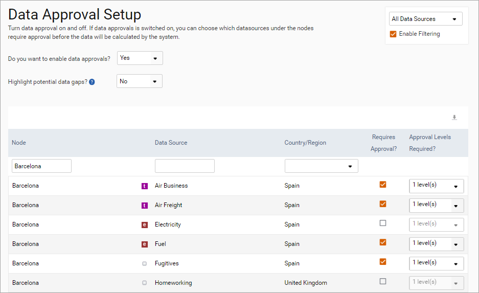
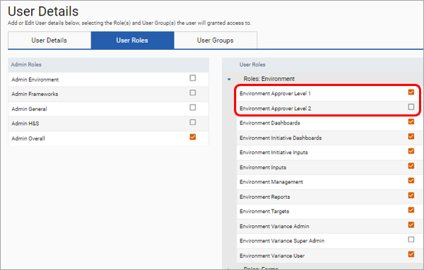

Approvals can be set up at the data source level in the environment module. Data uploaded to data sources for which approvals have been switched on must be approved to the appropriate level for it to become available in dashboards and reports. The approvals functionality is set up in ‘Environment > Settings > Data Validation > Data Approval’.
To turn on approvals, select "Yes" in the Do you want to enable data approvals? dropdown.
To display (in the approval comparison details sub-list) any sub-types that were in previous uploads but not the current upload, select "Yes" in the Show previous period's missing sub-types? dropdown.
To turn approvals on for a data source, tick the box in the Requires Approval? column. Data must either be approved once or twice according to the selection made in the Approval Levels Required column.

Please note, to approve data in a given view a user must be part of a user group that has Sign-off access to the associated view. This can be accessed via Admin Settings > Users > User Groups, selecting the relevant group and ensuring the group has sign-off access to the view. Users must also have the Environment Approver Level 1 or Environment Approver Level 2 user role. This can be set up in Admin Settings > Users > User Details > User Roles tab. Level 2 approvals cannot be completed before level 1 approvals have been completed.

Once set up, any data uploaded to SPM for this data source will be defined as ‘Unapproved’ and will activate an email (sent overnight) to the signoff user.